Once a client is created, you can create and implement their site(s) from Cloud Admin. You can also create templates that you can copy to create new sites. Once the site is created, you can use the Editor to edit, preview, and publish the site.
Use Cloud Admin to Create Sites
Once you’ve created
a client, you can then use Cloud Admin to create a site for that client.
Note: You must create at least one plan before you can create a site.
To create a site:
In the Cloud Admin, from the client’s detail page, in the Sites area click Add Site.
In the Add Site dialog, you must provide a title and a unique domain, and select a plan to assign to the site.
Note: Domain names must be unique and must not contain weebly.
In the Site Template area, select New Site to create a new site from scratch. Or use a template or copy an existing site (more in the next sections).
Optionally, provide site settings like timezone, date format, language, and more.
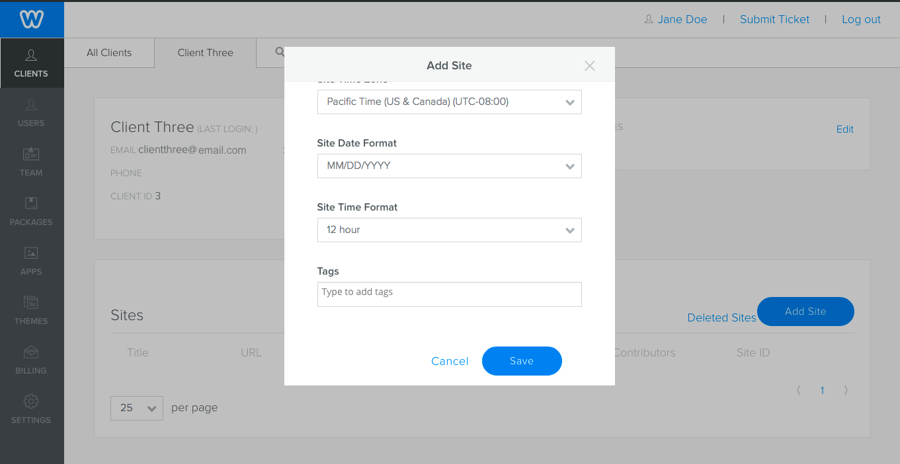
In the Theme Gallery, choose the theme for the site. If you’ve created custom themes they display on the tab with your company name.
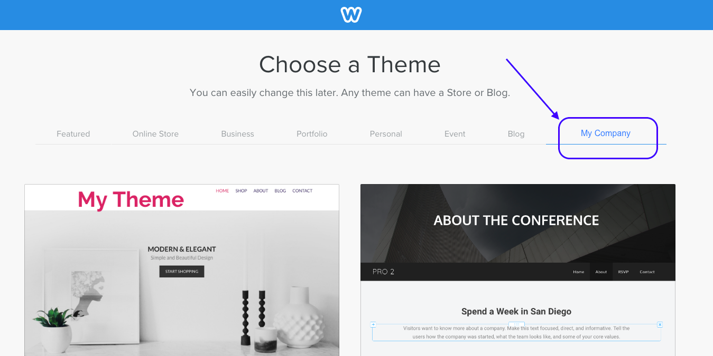
caption text
Click Save.
When you create a site for a client, they don’t have any access to it, other than visiting the published site. If you want them to be able to access the site so they do things like manage orders, view blog comments, or even edit the site, you need to set them up as a site contributor. Once that’s done, they’ll be able to access the site from the User Portal.
Create a Site Using a Template
Instead of creating a site from scratch, you can start with a template. Templates are sites that you’ve created to use as a starting point for new sites. For example, you might create a template for an online store and one for a portfolio site.
You can create up to 30 templates.
To create a template:
Optionally create a client that will “own” the template sites, then create your template sites under this client. While you can create a template out of any client’s site, this is a great way to organize and manage your templates.
Create a site following the instructions above. Add elements and design your site.
Optionally add apps from the Weebly App Center . But remember that access to apps is based on plans, so you may be restricting the potential sites that can use the template by adding apps. To avoid this, when you use the template, you can temporarily change the plan the new site is on so that it allows access to the App Center. More below.
Tip: Remember that a template is a starting point. Don’t add too many elements, or design too specifically. It may end up being more work to remove what isn’t needed than it would have been to start from scratch.
In the Cloud Admin, from the details page for your template site, click Add as Template.
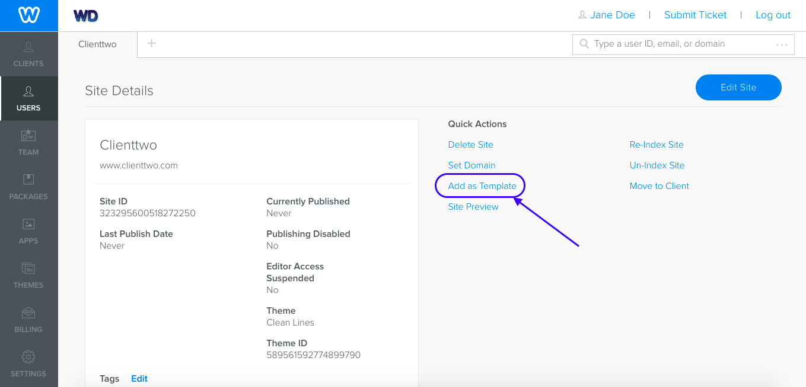
Create a template
Once added, that site appears as a template available for use when you chose to copy a site. More in the next section.
To remove a template:
If you want to stop using a site as a template, from the Site Details page, click Remove as Template.
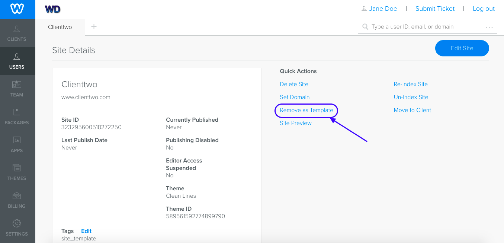
Remove a template
Copy a Site
Instead of creating a site from scratch, you can copy an existing one. There are two common use cases for copying a site:
You’ve created templates that you copy to create new sites
A client wants to create a clone of one of their existing sites
When you copy a site, it copies the existing site and theme, and copies all pages and page content. Orders and members are not copied, and neither are blog posts. Products, membership settings, and any installed apps are copied. Apps will appear in the new site as they do in the original, however they will be in a disconnected state. You will need to explicitly grant permission to reconnect the app when logging into the Editor.
To copy a site:
Following the steps above for creating a site in Cloud Admin.
In the Add Site dialog, scroll down to the Site Template section.
Choose to either copy a template that you’ve created or to copy an existing site.
If you choose to copy a template, a dropdown displays showin all templates that you have created. Select the one to use.
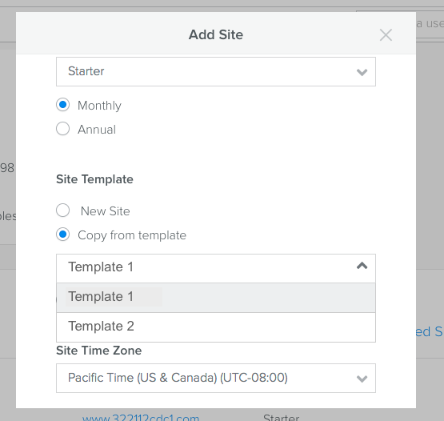
If you choose to copy an existing site, select one of the existing sites from the dropdown.
If the new site is not on a plan that allows access to the App Center, the app will work, but you will need to temporarily change the plan to connect the app.
To allow an app on a plan that doesn’t support the App Center:
Temporarily change the site’s plan to one that has access to the App Center.
Log into the site from the Cloud Admin and in the Editor, grant the permissions for the app.
Change the plan back to the original one.
Anyone editing the site will be able to manage the app, but will not be able to visit the App Center.
Edit a Site
From the site’s detail page in the Cloud Admin, click Edit Site.
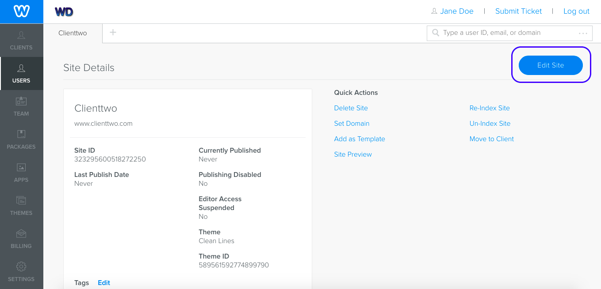
Edit a Site from the Cloud Admin
The site opens in the Editor, where you can make any needed changes.
Preview a Site Before Publishing
You can preview how a site will appear live without publishing, from the Editor. The site displays in a preview window with a temporary URL. You can send this URL to team members or clients so they can view the site. The URL remains valid for 30 days.
To preview a site:
In the Editor, click Preview.
Note: Only users accessing the Editor from Cloud Admin will see the Preview button. It is unavailable to users accessing the site from the User Portal.
OR, in the Cloud Admin, from the site’s detail page, click the Site Preview link.
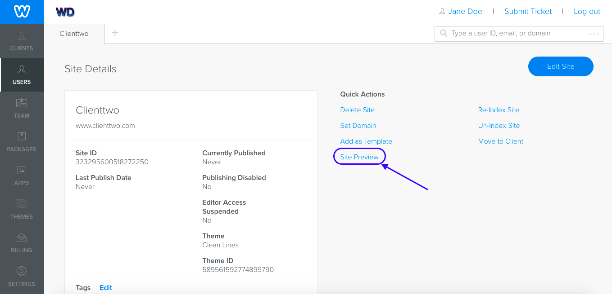
Preview a site from the Cloud Admin
The site displays in a preview window. Copy the URL from here and send to the client or team member.
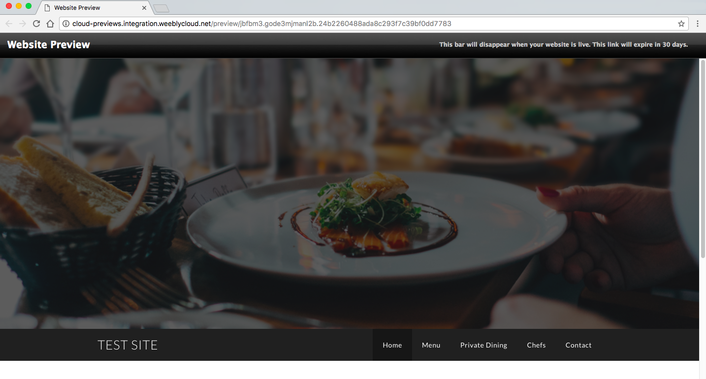
Note: Blogs, Commerce, Search, Forms, and Membership do not work in preview sites.
Publish a Site
When you publish a site, it goes live at the domain you’ve registered for the site and can be immediately accessed.
To publish a site:
From the Editor, click Publish.
Change a Site’s Domain
You can change a site’s domain when needed.
From the site’s detail page, click Set Domain and enter the new domain.
Note: Domain names must be unique and must not contain weebly.
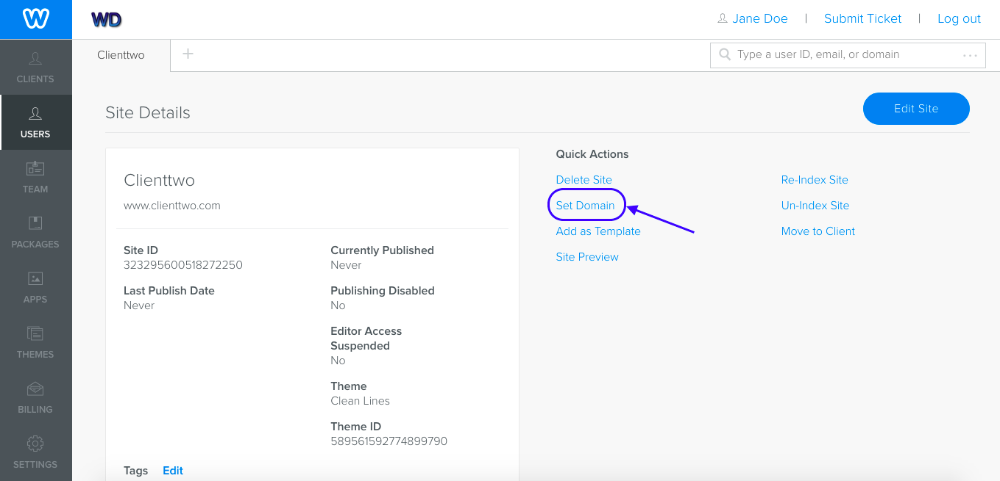
Change the site's domain
Move a Site to Another Client
You can move a site to another client from the Cloud Admin.
From the site’s detail page, click Move to Client.
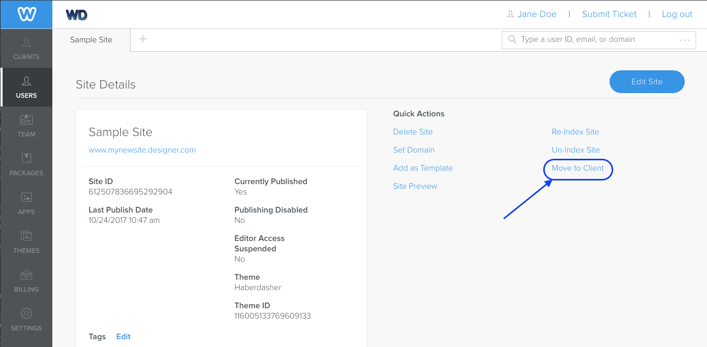
Move a site to another client
Use the dropdown to select the client to move to and click Move Site.
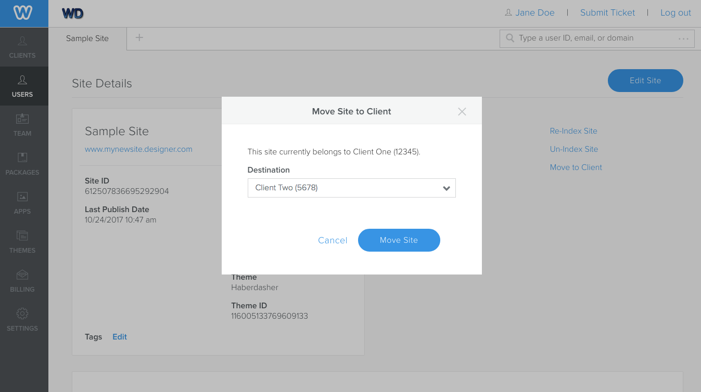
Select the target client
Suspend Access to a Site
To temporarily prevent a user from updating their site in the event they are delinquent on their payment, their access to a site can be suspended using the Site::disable endpoint. When a site is suspended, access to the Weebly editor is disabled (the published site remains unchanged and active).
Use the GET /site API which returns a suspended parameter with a value of true or false to determine if a site is suspended (the Cloud Admin also shows you if a site is suspended). A site can be taken out of a suspended state by making a call to Site::enable.
Unpublish a Site
In the event you want to unpublish a site you can use the Site::unpublish endpoint. This will unpublish the site, but not prevent the user from republishing, if they have access to do so. This API method should not be taken lightly. Unpublishing a user’s site should be communicated far in advance so the user can take the appropriate steps to remedy the situation.
You’ll no longer be billed for the unpublished site.
Delete a Site
If a user cancels their subscription you can delete their site(s). This completely prevents the user from accessing the site . You can delete a site from the site detail page in the Cloud Admin.
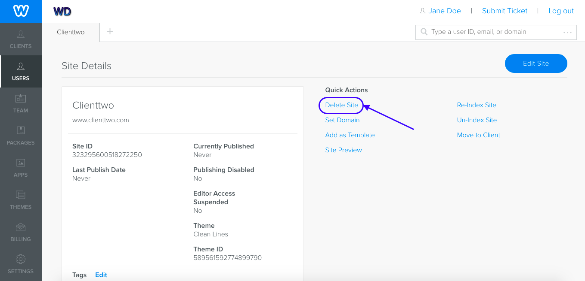
Delete a site from the Cloud Admin
You can also delete a site by making a call to the DELETE /site API.